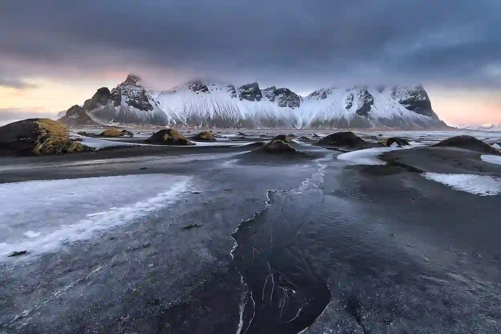
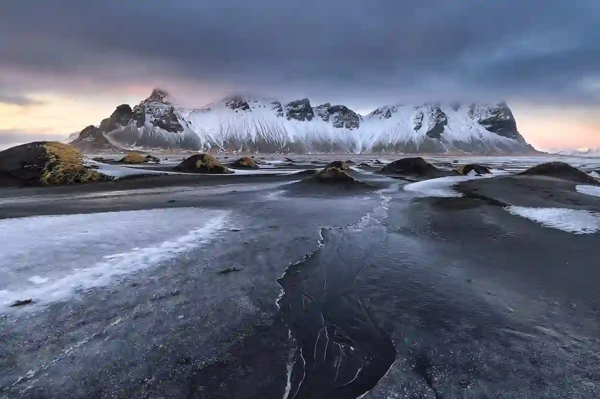
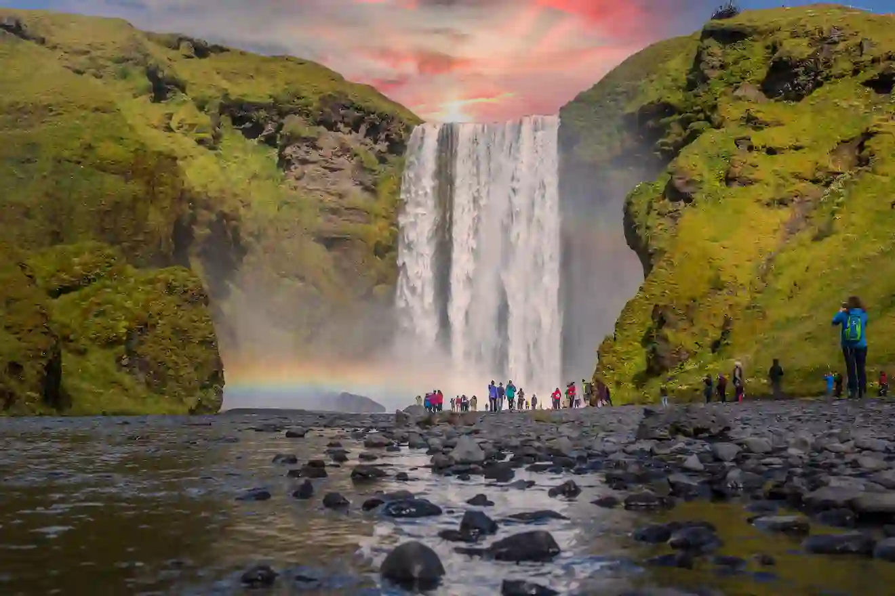
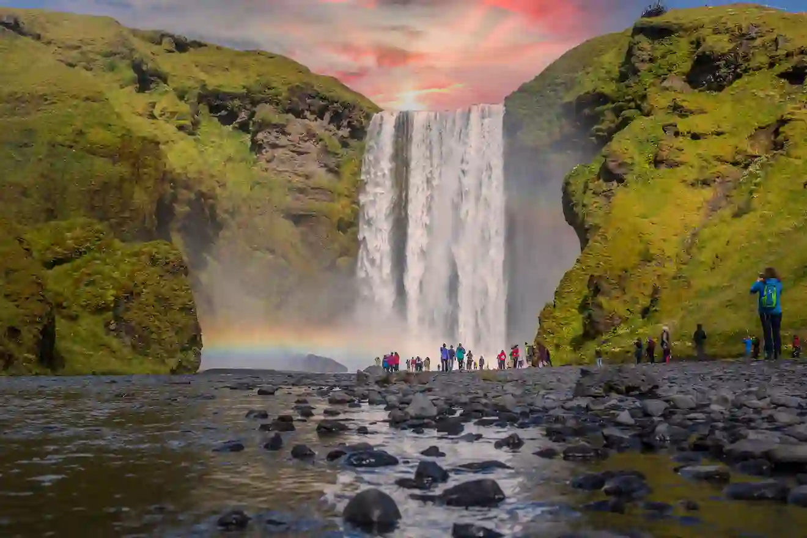
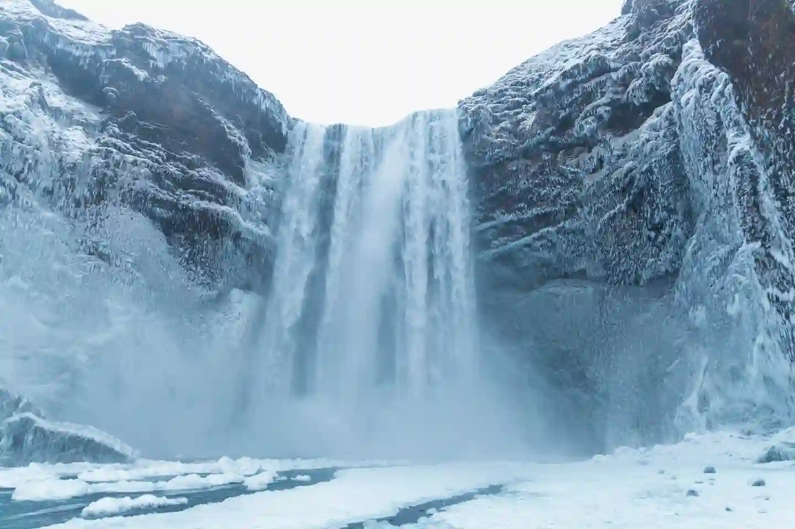
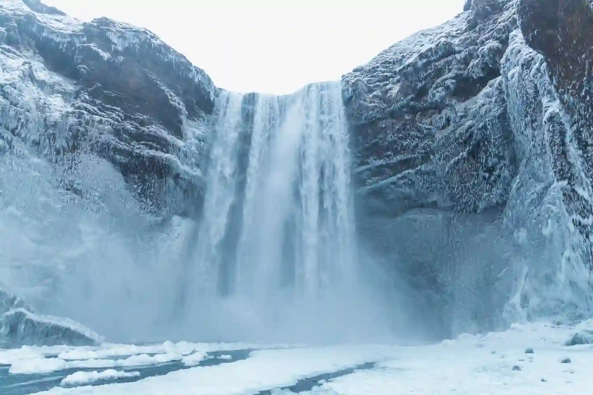

Hvítá River
Location: South Iceland, near the Golden Circle, just an hour from Reykjavík.
Rapids: Class 2 (Family-friendly).
Highlights: Canyons, waves, rock formations, and stops for cliff jumping; great for first-timers and families.
 

Jökulsá Austari
Location: North Iceland.
Rapids: Class 4 (Extreme/Advanced).
Steep drops, turbulent waters, deep canyons, considered one of Europe's best for serious rafters.
 

Jökulsá Vestari
Location: North Iceland.
Rapids: Class 2 (Family/Scenic).
Highlights: Gentle currents, calm sections, cliff jumping, hot chocolate breaks, perfect for families and beginners.
 

| Trip Name | Duration | Cost |
|---|---|---|
| Hvítá River (Family Adventure) | 3 hours | $100 per person |
| Jökulsá Austari (Extreme Rapids) | 4.5 hours | $160 per person |
| Jökulsá Vestari (Scenic River Run) | 3.5 hours | $120 per person |
| Midnight Rafting Tour | 5 hours | $500 per person |